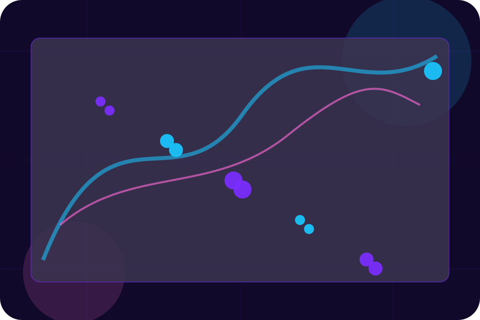
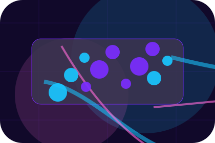
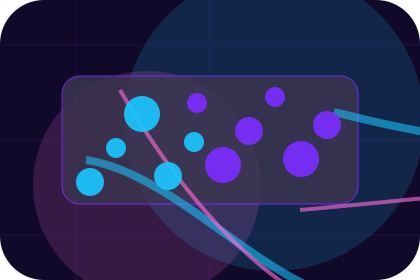
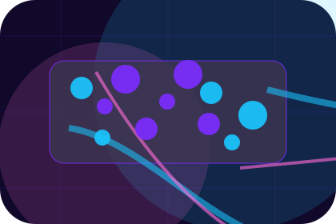
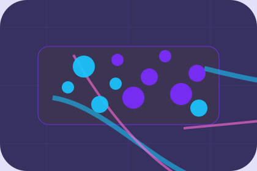

Context
Incident gives the page a specific angle instead of repeating the navigation label.
Response / 01
Response opens as a clear cybersecurity decision hub: what Cipher offers, who it helps, why it matters, and which route to take first.
The first screen combines positioning, proof, primary action, and fast internal navigation, so people can act immediately or compare the rest of the response route with context.
Purple cloud-risk hero
Select the closest route and Cipher keeps the next step, proof, and follow-up expectation aligned with privacy and threat reduction.

Response / 02
Incident adds dark context to the response route, using the cloud security command centre structure to support privacy and threat reduction before visitors choose a next step.
Cipher uses rounded cloud-risk cards and focused copy to make the decision easier to scan, aligning the section with privacy and threat reduction rather than filling space.
Explore Response

Incident gives the page a specific angle instead of repeating the navigation label.
Response / 03
Triage adds dark context to the response route, using the cloud security command centre structure to support privacy and threat reduction before visitors choose a next step.
Cipher uses rounded cloud-risk cards and focused copy to make the decision easier to scan, aligning the section with privacy and threat reduction rather than filling space.
Explore ResponseTriage gives the page a specific angle instead of repeating the navigation label.
The rounded cloud-risk cards show what to compare, what to avoid, and what matters most for cybersecurity, privacy & risk protection visitors.
The final cue points to a useful internal route so the section keeps the journey moving.
Response / 04
Containment adds dark context to the response route, using the cloud security command centre structure to support privacy and threat reduction before visitors choose a next step.
Cipher uses rounded cloud-risk cards and focused copy to make the decision easier to scan, aligning the section with privacy and threat reduction rather than filling space.
Explore ResponseContainment gives the page a specific angle instead of repeating the navigation label.
The rounded cloud-risk cards show what to compare, what to avoid, and what matters most for cybersecurity, privacy & risk protection visitors.
The final cue points to a useful internal route so the section keeps the journey moving.
Response / 05
Investigation adds dark context to the response route, using the cloud security command centre structure to support privacy and threat reduction before visitors choose a next step.
Cipher uses rounded cloud-risk cards and focused copy to make the decision easier to scan, aligning the section with privacy and threat reduction rather than filling space.
Explore ResponseCipher structures investigation around context, judgment, and a clear next route so visitors can compare the block quickly before they request an audit.
Request AuditResponse / 07
Reporting adds dark context to the response route, using the cloud security command centre structure to support privacy and threat reduction before visitors choose a next step.
Cipher uses rounded cloud-risk cards and focused copy to make the decision easier to scan, aligning the section with privacy and threat reduction rather than filling space.
Explore ResponseReporting gives the page a specific angle instead of repeating the navigation label.
The rounded cloud-risk cards show what to compare, what to avoid, and what matters most for cybersecurity, privacy & risk protection visitors.

The final cue points to a useful internal route so the section keeps the journey moving.
Response / 08
Lessons adds dark context to the response route, using the cloud security command centre structure to support privacy and threat reduction before visitors choose a next step.
Cipher uses rounded cloud-risk cards and focused copy to make the decision easier to scan, aligning the section with privacy and threat reduction rather than filling space.
Explore ResponseLessons gives the page a specific angle instead of repeating the navigation label.
The rounded cloud-risk cards show what to compare, what to avoid, and what matters most for cybersecurity, privacy & risk protection visitors.
The final cue points to a useful internal route so the section keeps the journey moving.
Response / 09
Prevention adds dark context to the response route, using the cloud security command centre structure to support privacy and threat reduction before visitors choose a next step.
Cipher uses rounded cloud-risk cards and focused copy to make the decision easier to scan, aligning the section with privacy and threat reduction rather than filling space.
Explore ResponsePrevention gives the page a specific angle instead of repeating the navigation label.
The rounded cloud-risk cards show what to compare, what to avoid, and what matters most for cybersecurity, privacy & risk protection visitors.
The final cue points to a useful internal route so the section keeps the journey moving.
Response / 10
Cipher closes the response route with a clear action, a quick reminder of the value, and a low-friction way to request an audit.
Visitors who are ready can use the primary action. Visitors who are still comparing can scan the section links, proof, and support routes before they request an audit.
Request AuditThe final block keeps the choice simple: act now, compare one more proof route, or send enough detail for a focused response.
Request Auditprivacy and threat reduction
A cloud-risk command site with neon topology, rounded security modules, compliance proof, and audit routing. Response ends with a direct path to request an audit, plus enough context for visitors who still need to compare.

Request AuditInformation is provided for planning and should be reviewed for the final client, location, and operating rules.